一早的时候，就有个逗比在 Goflyway 的WIKI中发现了 Goflyway套CDN的方法（看了下是去年底 新增的功能），于是我研究了以下，发现很简单。
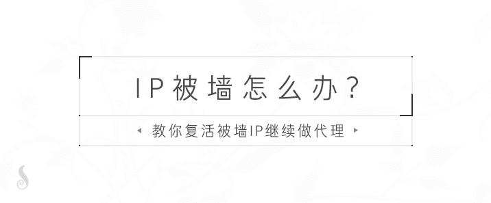
此教程适合于 服务器IP被墙却无法退款只能吃灰 和 对速度要求低只需要保证服务器不会动不动就被墙IP 的人观看。
如果你的IP已经被墙了，那么可以用这种方式让你的被墙IP的服务器继续拿来做代理，如果你服务器还没有被墙，那么可以预防IP被墙。
注意：通过套CDN的方式来链接代理服务器，可能会导致速度下降，速度取决于 你与CDN之间的网络质量 和 CDN与你代理服务器之间的网络质量。
总归，做好心理准备，别指望速度快，这种强行续命的方子总会有其不可忽视的弊端。。。
注意：目前 Goflyway 既可以通过 CDN 方式复活被墙IP，也可以通过 KCP 协议复活被墙IP。
Goflyway一键脚本 已支持配置 HTTP伪装，Goflyway Tools 客户端已支持 CDN 模式启动。
账号演示：https://doub.io/sszhfx/ 中的 美国 - 洛杉矶2
其他 Goflyway 教程请看：https://doub.io/tag/goflyway/
原理说明：
本质上 Goflyway 是一个HTTP服务，所以他也支持反向代理，可以用来HTTP伪装，而他又支持 WebSocket 协议，所以它同样可以经过 CDN 来传输数据，也就是：Goflyway + WebSocket + HTTP + CDN。目前能实现套CDN方式的代理软件只有 Goflyway 和 V2ray。
以下教程以 Cloudflare CDN 为例，其他支持 WebSocket 协议的 CDN 均可使用（大型一些的CDN都支持）。
假设你的IP 1.1.1.1 被墙，那么你无法直接连接这个IP，那么就可以用免费CDN中转一下，你去链接免费CDN的节点IP即可。
Goflyway客户端 <=> Cloudflare CDN节点 <==> Goflyway服务端（被墙IP）
首先你需要有个域名（免费域名也可以），因为使用CDN必须要有域名，例如：a.com。
然后服务端配置反向代理 b.com 这个域名，接着在 CDN中把域名解析到你被墙的IP（a.com --> 1.1.1.1），最后等待CDN解析生效，生效后你使用 Goflyway客户端链接该域名，CDN就会转发数据到到Goflyway服务端（被墙IP），而你如果直接访问域名 a.com ，就会看到 b.com 网站的内容。
域名相关：
首先你要有个域名，如果你已经有了可以跳过这一步，如果你还没有，那么可以去随便申请个免费域名：教你申请.tk/.ml/.cf/.gq/.ga等免费域名
以下教程均以 Freenom 的免费域名为例。
注意：免费域名有可能会被收回（似乎不让反向代理），如果想要稳定，可以随便买个便宜域名，几美元一年的域名很多，建议海外购买域名（例如 namecheap）。
配置 Cloudflare CDN
如果你有 Cloudflare CDN 的账号，那么请 登陆，如果没有请 注册。
点击展开 查看更多
添加域名
注册或登陆成功后，我们直接访问添加域名页面：https://www.cloudflare.com/a/add-site
输入你要在 Cloudflare CDN 添加的域名，例如：doub.cf ，填写后点击 Add Site 按钮继续。
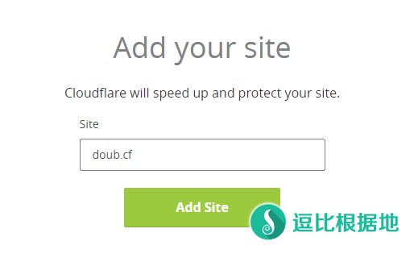
点击 Next 按钮继续。
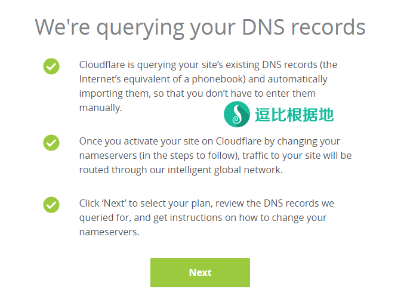
选择第一个 FREE 套餐，并点击 Confirm Plan 按钮继续。
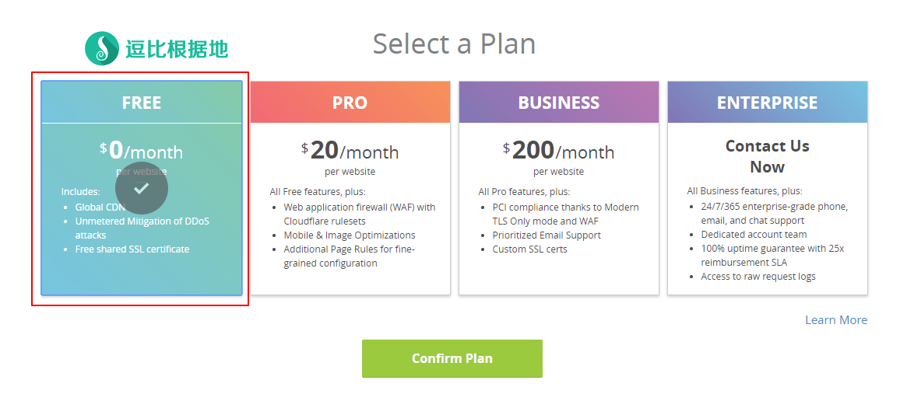
这个步骤可以先不管，直接点击 Continue 按钮继续。
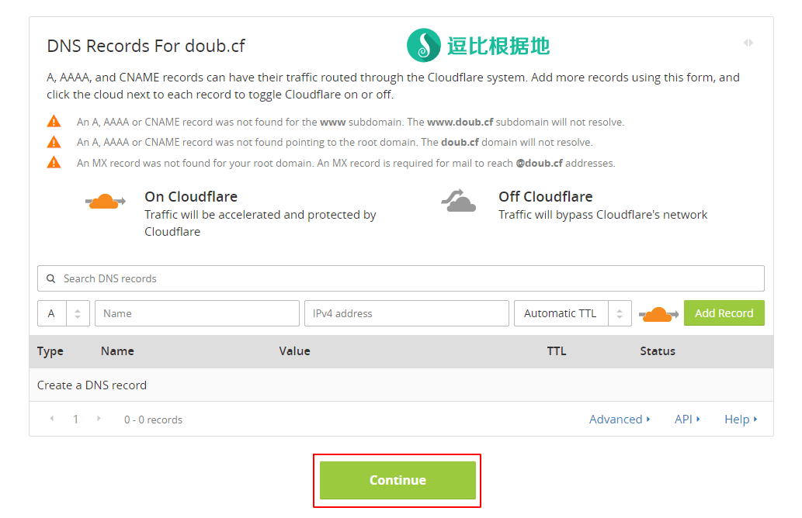
修改域名DNS
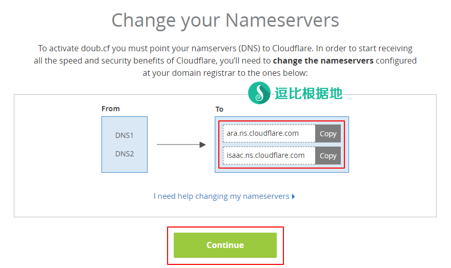
到这一步，就会提醒你设置域名的DNS，我们复制这两个DNS（注意：可能你们看到的DNS和我图里的不一样，以你们看到的为准）。
然后我们访问 Freenom 域名管理页面：https://my.freenom.com/clientarea.php?action=domains
找到你要配置的域名，点击 Manage Domain 按钮，进入管理界面。
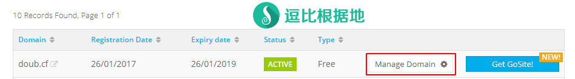
然后点击 Management Tools - Nameservers ，然后勾选第二条 Use custom nameservers (enter below) 选项，接着如下图所示填写刚才复制的 DNS 。
填写正确后，点击 Change Nameservers 按钮保存DNS配置。
最后返回 Cloudflare CDN 配置页面，点击 Continue 按钮继续。
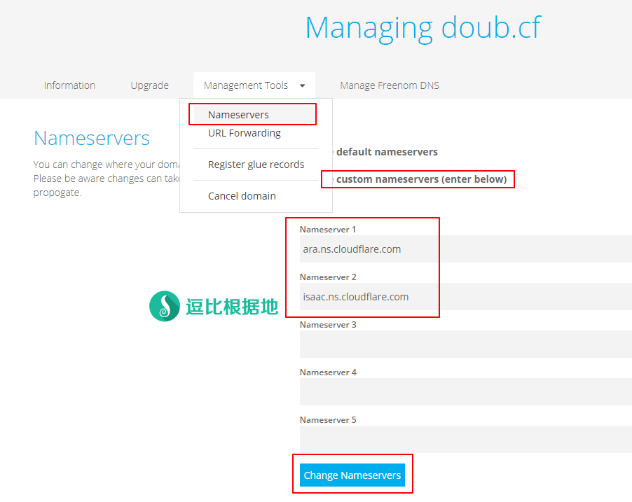
最后就如下图所示一样，提示生效中。
因为更换了DNS的原因，所以生效可能需要几小时到一整天，在这个等待生效的时间里我们先去设置一下其他东西。
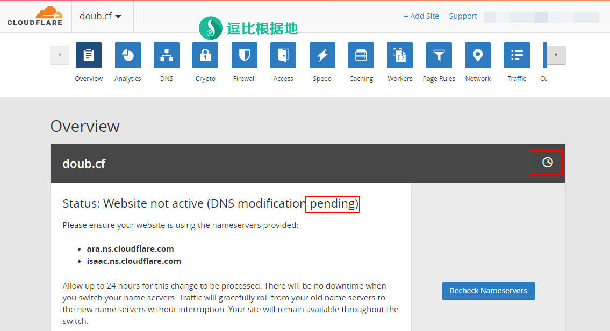
取消自带 SSL
因为 Goflyway 是一个HTTP代理，所以我们需要关闭 Cloudflare CDN 自带SSL证书，避免报错。
点击页面顶部 Crypto 按钮，然后找到 SSL 配置并改为 Off 选项（如下图所示）。修改后直接应用生效。
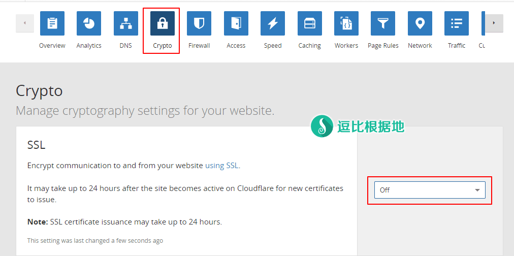
设置域名解析
我们还需要配置一下域名解析。
点击页面顶部的 DNS 按钮，然后如下图所示，在第一个红框圈中的地方填写域名解析信息，下图示例解释：
- A：代表A记录，也就是域名解析为IP。
- go：指的是域名记录，也就是子域名：go.doub.cf，你可以填写为 @ ，这代表域名 doub.cf 。
- 45.62.xx.xx：指的是域名要解析的IP，这里写上你的被墙服务器的IP。
然后点击 Add Record 按钮添加域名解析记录。
添加后就如下图第二个红框所示。
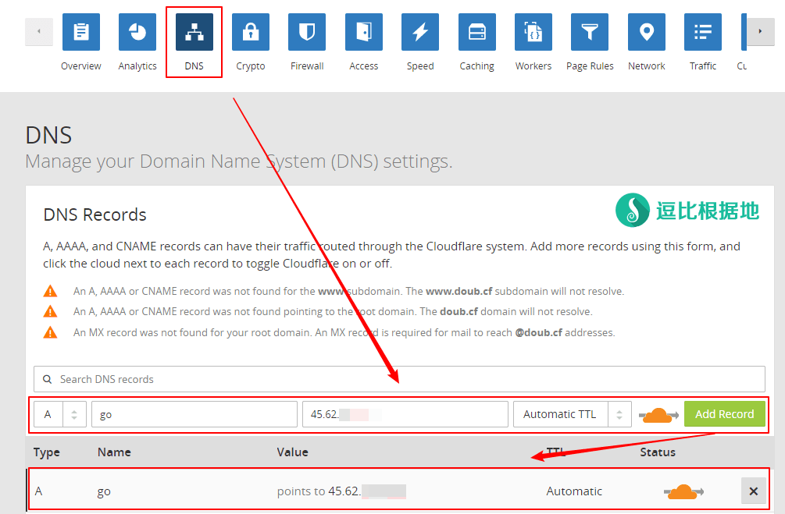
生效示例
当你在首页[Overview]看到如下图所示时，则代表域名DNS修改已经生效。
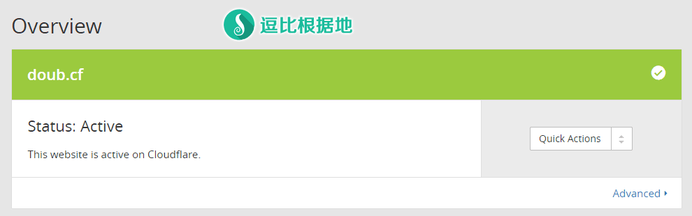
Goflyway 服务端配置(可选)
注意：此步骤(反向代理HTTP伪装)为可选步骤，无论是否配置反向代理HTTP伪装，都不会影响客户端使用，服务端只需要配置端口为 指定HTTP端口 就行了。当然，配置HTTP伪装可以更好的伪装，所以还是建议配置。
服务器IP被墙，如何安装 Goflyway 服务端？
让SSH软件走代理（putty xshell 都支持配置代理服务器，例如SS/SSR的本地代理 SOCKS5 127.0.0.1 1080），不会设置的话，用这个软件让SSH软件走代理。
注意：以下HTTP伪装示例网址是：http://kernel.ubuntu.com/~kernel-ppa/mainline/，但是我不希望大家都照着教程里写，最后则都是千篇一律的HTTP伪装网址，那反而会成为特征。
建议自己寻找合适的反向代理伪装网址，个人建议按照重要性排序需要满足：
1. 该网站位于海外；
2. 必须是 HTTP协议的网站（http://xxx，没有HTTPS或者不会自动重定向到HTTP的网站）；
3. 最好该网站是 会用来传输大流量 的，例如我示例选用的 Ubuntu内核仓库网址，平时大流量传输很正常（下载内核）。
如果是一键脚本搭建的请看：
点击展开 查看更多
首先确保 goflyway.sh 脚本版本号为 v1.0.4 以后，如果不是请更新脚本并重装 Goflyway。
然后运行脚本，安装 Goflyway 时（或者运行脚本 - 7.设置 GoFlyway 账号 - 4.修改 伪装配置）会提示你输入伪装地址，如下示例填写即可：
请输入 GoFlyway 要伪装的网站(反向代理，只支持 HTTP:// 网站)
(默认不伪装):http://kernel.ubuntu.com/~kernel-ppa/mainline/
========================
伪装 : http://kernel.ubuntu.com/~kernel-ppa/mainline/
========================
如果是手动教程搭建的请看：
点击展开 查看更多
服务端手动教程：https://doub.io/goflyway-jc1/#服务端配置
# 先进入你的 Goflyway 服务端安装目录：
## 如果你是手动安装的，那么假设服务端安装在 /root 目录下：
cd /root/goflyway
# 然后运行启动目录。
nohup ./goflyway -k="doubi233" -l=":80" -proxy-pass="http://kernel.ubuntu.com/~kernel-ppa/mainline/" > /tmp/goflyway.log 2>&1 &
# doubi233 是密码
# 80 是端口
# http://kernel.ubuntu.com/~kernel-ppa/mainline/ 是HTTP伪装的网站，必须是HTTP网站才行，这个网站就是我们平时更换内核开启BBR的 Ubuntu内核仓库。
# 因为要经过 Cloudflare CDN，所以端口有限制，只能使用以下端口之一：
80 8080 8880 2052 2082 2086 2095
停止
kill -9 $(ps -ef|grep "goflyway"|grep -v grep|awk '{print $2}')
查看日志
tail -f /tmp/goflyway.log
Goflyway 客户端配置
运行 Goflyway Tools 客户端并添加账号，服务器地址处填写你的 Cloudflare CDN 配置的域名（端口和密码照常填写），然后客户端协议选择 CDN，再启动代理即可。
如果是手动教程客户端的请看：
点击展开 查看更多
客户端手动教程：https://doub.io/goflyway-jc1/#客户端配置
我们只需要修改一下客户端手动教程内写入的运行脚本内容即可：
# 原客户端教程 脚本内容
goflyway.exe -up="1.1.1.1:80" -k="doubi233" -l=":8100"
pause>nul
# 修改后 脚本内容
goflyway.exe -up="cf://go.doub.cf:80" -k="doubi233" -l=":8100"
pause>nul
# 记得把 go.doub.cf 替换为你的域名，端口号就是 Goflyway 服务端监听的端口，必须填写。
然后其他的该怎么用就怎么用，没影响。
效果示例
当你访问 go.doub.cf 时（如果你使用的不是80端口，那么就需要加上端口号，比如：go.doub.cf:8080），就会如下图所示，而你通过 Goflyway 客户端链接又能正常做代理。
账号演示：https://doub.io/sszhfx/ 中的 美国 - 洛杉矶2
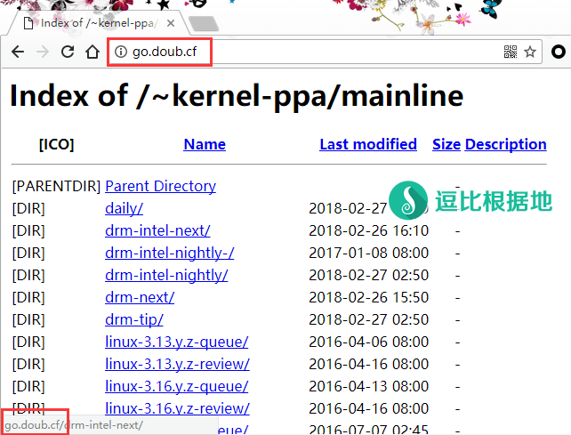
其他说明
CDN模式下 Goflyway 服务端经常无法连接的问题
注意：在 v1.3.0a 版本后，该问题已修复。当然，如果你依然出现该问题，请先去 Github 向作者反馈，然后使用下面的方法临时解决。
点击展开 查看更多
最近经过观察和反馈（我分享的Goflyway CDN模式免费账号），发现在CDN模式下，Goflyway 服务端经常会无法连接，重启 Goflyway 服务端后正常。
目前不清楚为什么会这样，所以只能采取定时重启 Goflyway 服务端来解决这个问题，方法如下：
首先你要安装 Crontab 定时任务程序：
crontab -l
# 通过上面这个命令，判断服务器是否安装了 crontab ，如果提示命令不存在，那么安装：
# CentOS系统：
yum install crond -y
# Debian/Ubuntu系统：
apt-get install cron -y
确定安装成功后，接着添加定期重启任务：
crontab -l > "crontab.bak"
sed -i "/goflyway restart/d" "crontab.bak"
echo -e "\n*/30 * * * * /etc/init.d/goflyway restart" >> "crontab.bak"
crontab "crontab.bak"
rm -r "crontab.bak"
# 如果你要删除定期重启任务，那么只需要在执行一遍上面的代码，但是需要跳过第三行代码。
# 上面的代码 */30 * * * * 指的是 每30分钟 重启。
# 代码 1 * * * * 指的是 每1小时01分时 重启。
# 代码 1 */2 * * * 指的是 每2小时01分时 重启。
# 最后你可以通过 crontab -l 代码来查看当前的定时任务。
转载请超链接注明：逗比根据地 » GoFlyway 进阶教程：免费域名+免费CDN+HTTP伪装=被墙的IP继续做代理
责任声明：本站一切资源仅用作交流学习，请勿用作商业或违法行为！如造成任何后果，本站概不负责！


如果你不会搞，那么干脆用浏览器扩展来管理代理算了：https://doub.io/dbrj-13/
2. 这个比较麻烦，评论里说不清，请 Telegram群组(TG使用教程)私聊联系我讨论解决。
因为 Goflyway 客户端还有众多参数，考虑到有人可能需要自定义添加更多代码，所以加了个【其他参数】，不懂请无视。
我网站分享的免费账户能用吗？
2. 似乎近期移动链接 CF CDN 线路抽风，导致速度极慢，这种情况，可以尝试手动指定 CF CDN IP地址试试。
hosts 中添加 ip+空格+你的Goflyway域名，CF CDN 的IP段可以看下面，你去找个 IP 计算器，照着填写就知道怎么用了。
还是说，你要用服务器B上面的代理去连接被墙IP的服务器A上面的代理服务端。这不是多次以及吗，直接用 服务器B上面的代理多好。
104.27.165.62 后面的 62 随便换个能用的试试。
注册并配置CDN，解析域名为被墙的服务器IP。
客户端照常填写服务端账号，把服务器IP换成域名即可。
我觉得这个教程唯一的新手难点，可能就是在 CDN 配置上面，很多小白没接触过CDN/域名配置。
墙检测到你的服务器可能是代理服务器时，就会TCP回程阻断，可能是封锁单个端口，也可能是22 80以外端口封锁，也可能是全部端口封锁。
你可以用 tcping 来测试SSH端口：Windows 使用 TCPing 工具来获取 TCP延迟、端口通顺情况、已禁Ping服务器的延迟